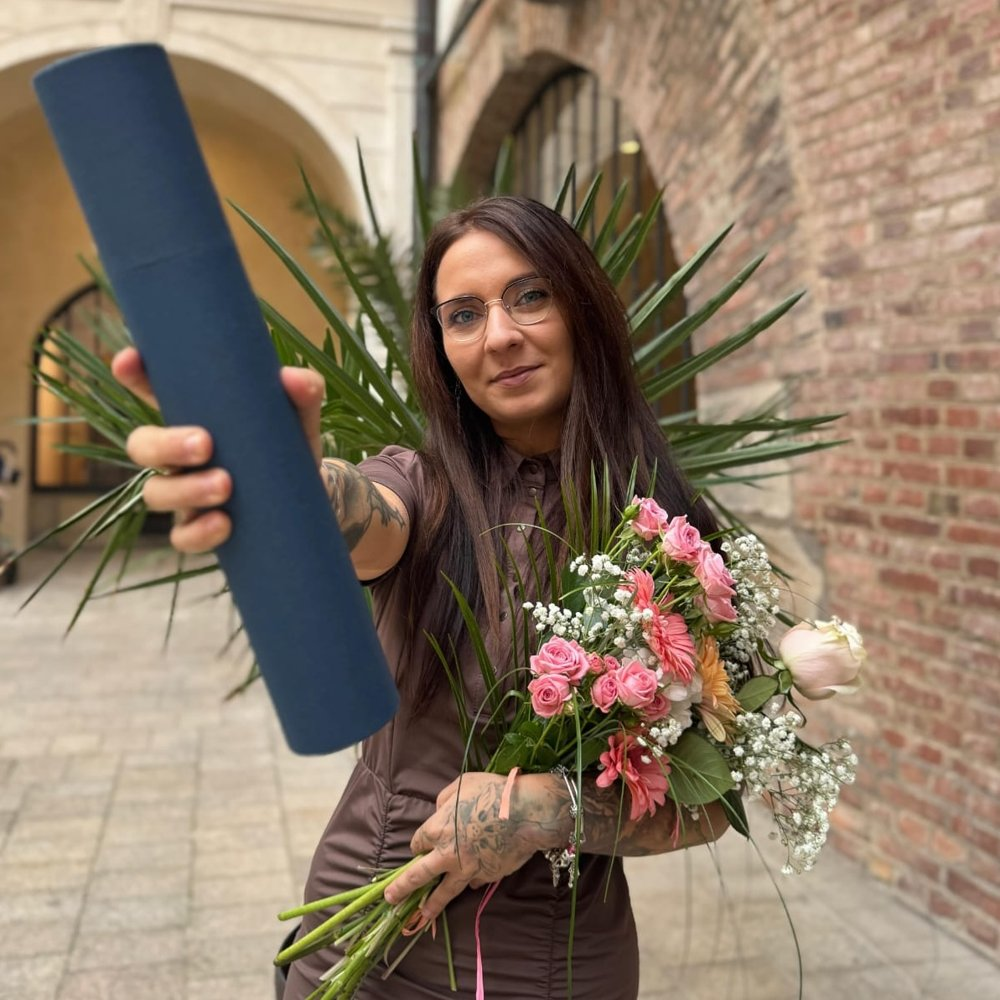

Volalo mi padesát vymahačů denně. Dnes pracuju v IT a nechápu, jak jsem to zvládla, říká Lucie Kopecká#
-
 Adéla Pavlun
Adéla Pavlun
- 9.7.2026

Po večerech, když děti usnuly, se učila do jedné do rána. Mezitím řešila insolvenci a hledala obor, který by šel skloubit s péčí o rodinu. Dnes devětadvacetiletá Lucie Kopecká pracuje jako datová analytička plně z domova a díky práci konečně poznává svět. Jak vypadala její cesta z nuly do IT?
Tvá cesta do IT rozhodně nebyla přímočará. Co jí předcházelo?
Krátce po maturitě jsem nastoupila do první práce v O2, jelikož mi rodinná situace nedovolila pokračovat ve studiu na vysoké škole, přičemž po roce pracovního života jsem otěhotněla. Když bylo synovi půl roku, začala jsem dálkově studovat sociální práci. Během rodičovské ale přišel covid, finanční problémy spojené s opatřeními vlády pro podnikatele, což vyústilo v insolvenci. Bylo to psychicky hodně náročné období a uvědomila jsem si, že pokud nechci dalších dvacet let zůstat na stejné platové úrovni, musím do jiného oboru, než je sociální práce.
Jak sis zvolila IT?
V Ústeckém kraji jsou možnosti kariérního růstu omezenější a zároveň jsem potřebovala práci, která půjde skloubit s dětmi. IT mi přišlo jako obor, kde se tyhle věci potkávají. Hledala jsem práci, která by mi umožnila pracovat z domova a zároveň mi dala větší finanční jistotu. Zvažovala jsem i jiné obory, třeba prodej nebo práci virtuální asistentky, ale upřímně – nechtěla jsem trávit celé dny v kontaktu s neznámými lidmi jako tomu bylo v O2.
Dokonce sis před vstupem do IT vyzkoušela i pozici IT náborářky. Ovlivnilo to rozhodování?
Považuji to za skvělou průpravu. Pochopila jsem díky tomu, jak IT trh funguje. Viděla jsem, jak vypadají kariéry lidí, kteří už v IT jsou, jak se posouvají a jaké mají možnosti. Tehdy jsem si také potvrdila, že přímé oslovování lidí není nic pro mě. V tu dobu jsem už věděla, že chci do IT.
Kromě toho jsi dostudovala i magisterský obor Informační technologie, zdroje a služby. Jak jsi to všechno zvládala s prací a péčí o malé děti?
Pro mě bylo studium zábavou. Neměla jsem problém s učením, předměty mě bavily a uvědomovala jsem si tu hodnotu. V osm večer jsem dala spát děti a do jedné jsem se učila. Insolvence s sebou ale přinesla mnoho problémů ve všech ohledech života, přičemž než se vyřídila, volalo mi i padesát vymahačů denně. Mám z toho období trochu černo, upnula jsem se na dokončení studia a rodinu, abych nad tím nemusela tolik přemýšlet, ale zpětně nechápu, jak jsem to vlastně zvládla.
Jakou jsi zvolila strategii, aby ses dostala do IT?
Velkou roli pro mě sehrálo junior.guru. Díky komunitě jsem získala přehled o jednotlivých IT oborech a zjistila, jaké pozice dávají smysl pro někoho, kdo začíná od nuly. Na začátku jsem ani nevěděla, jestli mě bude zajímat testing, analýza nebo něco jiného. Pomohly mi hlavně příběhy lidí, kteří podobnou změnou prošli. Sledovala jsem sdílené deníky, zkušenosti z pohovorů a praktické rady. Cením si taky osobního přístupu zakladatele Honzy Javorka, který mi kvůli insolvenci odpustil roční poplatek a navíc mě hned spojil s mentory.
V čem ti to propojení pomohlo?
Mentoři mi poradili, jaké kurzy mají smysl a na co se při hledání první práce zaměřit. Jan Meissner z Mews mi doporučil Czechitas. Motivaci jsem měla, ale bez stipendia by to pro mě nebylo možné. Naštěstí v té době začaly fungovat státní dotace na rekvalifikační kurzy u jiných zřizovatelů, díky kterým byla většina mého studia nakonec hrazená z těchto zdrojů. Z té schůzky jsem si tak nečekaně odnesla úplně něco jiného…
Co to bylo?
Zůstalo mi z toho povědomí, že existuje firma Mews, že se zaměřuje na hotelnictví, a že pracují výhradně z domova. Když jsem začínala hledat práci, přihlásila jsem se jednou na junior.guru podívat se po inzerátech a byla tam nabídka pro juniora právě do Mews. Kdybych nevěděla, co Mews je, tak bych to CV možná neposlala. A vyšlo to.
Na střední jsi studovala hotelnictví a máš v tom oboru zkušenosti. Byl i toto faktor, proč ses tam přihlásila?
Nehrálo to roli. Rozhodující byla práce z domova, neboť nemůžu dojíždět do kanceláře kvůli dětem a vzdálenosti. Vlastně mi bylo jedno, co ta firma dělá, pokud to nebude gambling. Toto byla neskutečná náhoda… Jan Meissner ani nevěděl, že se tam hlásím. Zároveň ale zpětně vidím, že bez přípravy a bez toho, že jsem věděla, kam mířím, bych tu šanci možná ani nevyužila.

Od doby co jsme začali jako firma ve velkém implementovat AI, juniory nenabíráme.
Čemu se dnes v Mews věnuješ?
Mews vyvíjí software pro hotely. Když zaplatíte v hotelové restauraci nebo recepční spravuje rezervace, často používá právě náš systém. Do firmy jsem nastoupila jako Junior Data Quality Analyst. Mým úkolem bylo hlídat kvalitu dat – kontrolovat, jestli jsou správně propojená, kompletní a připravená pro další využití. Připravovala jsem také podklady pro různé reporty a analýzy, aby s nimi mohly pracovat další týmy. Postupně jsem se posunula na pozici datové analytičky, kam jsem směřovala.
Jsi v práci spokojená?
Nad míru. Mám skvělé kolegy, podporu v rozvoji a práce mě baví. Díky tomu, že pracuji plně na dálku, se nemusím stresovat s nemocnými dětmi nebo zavřenou školkou. Zároveň v rámci práce cestuji – byla jsem například v Londýně, Amsterdamu nebo Barceloně. Poprvé jsem sedla do letadla právě díky Mews.
Co bys doporučovala lidem kteří nemají pracovní zkušenosti a směřují do IT?
Všude se skloňuje AI a opravdu je to potřeba. Je důležité AI umět používat kreativně a efektivně, nebýt k tomu skeptický a nepoužívat to bezmyšlenkovitě. Je nutné vědět, co AI dělá – naučit se základy, abych ji dokázala kontrolovat. Potřebuju rozumět tomu, jaké to může mít důsledky, a umět zpětně zrekonstruovat, co AI udělala, abych to dokázala vysvětlit. Důležité je nevzdávat se, i když výsledky nepřijdou hned, protože každý jde svou vlastní cestou.
Datová analýza bude pravděpodobně jedním z oborů, kde AI změní práci analytiků. Jak to vidíš?
Od doby co jsme začali jako firma ve velkém implementovat AI, vidím i v naší firmě, že juniory nenabíráme. Základní úkoly se automatizují. Co jsem dřív dělala měsíc, udělám za den. Nemyslím si ale, že analytici zmizí. Naopak. Budeme víc zodpovědní za kvalitu dat, nastavení procesů a kontrolu toho, aby AI pracovala správně.
Takže ta vstupní brána do oboru se poměrně uzavřela. Jak se pak junioři vůbec dostanou k té roli, když se to nikdy nenaučí na základních úkolech?
U nás je situace jiná než ve větších korporátech. Nemyslím si, že by byla cesta do oboru pro juniory uzavřená, jen může být delší a náročnější. Zároveň už dnes neplatí, že je potřeba znát všechno zpaměti, protože s nástupem AI tahle nutnost částečně mizí. O to víc je ale potřeba být kreativní a přemýšlet, jak si svou cestu najít.
A kam bys chtěla směřovat ty osobně?
Do budoucna bych se ráda posunula na manažerskou pozici. Chci si vyzkoušet vést projekty a mít možnost podílet se na rozhodování. Jako člověk s osobní zkušeností s kariérní tranzicí jsem také mentorovala pro Czechitas. V tom by mě bavilo pokračovat. Můj sen je dostat se jako dobrovolník nebo na částečný úvazek do neziskové organizace typu Člověk v tísni. Sociální práce je mi stále hodně blízká a ráda bych se angažovala v projektu, který má právě sociální přesah.
Máš otázky? Chceš probrat kariérní změnu do IT?
Na junior.guru Discordu si pomáhá 219 lidí, které zajímá svět IT juniorů. Začátečníci, kteří hledají komunitu a podporu. Senioři s chutí sdílet své zkušenosti. K tomu pravidelné online akce a mnoho dalšího.